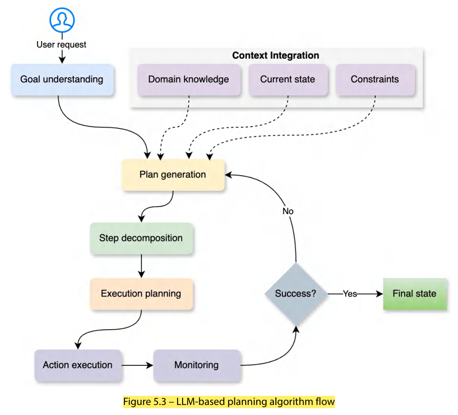
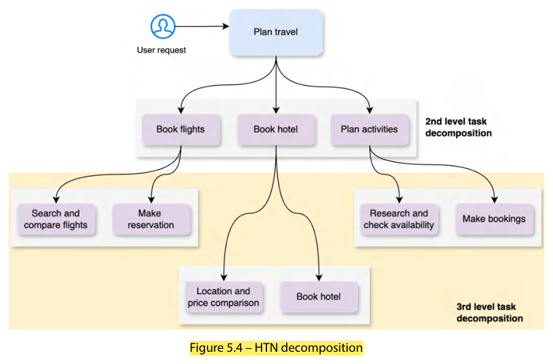
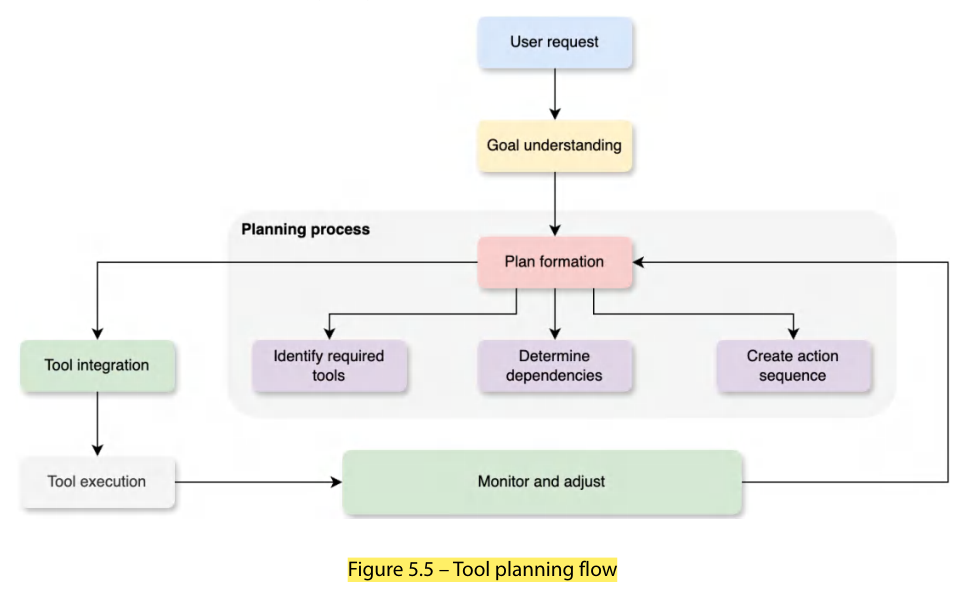
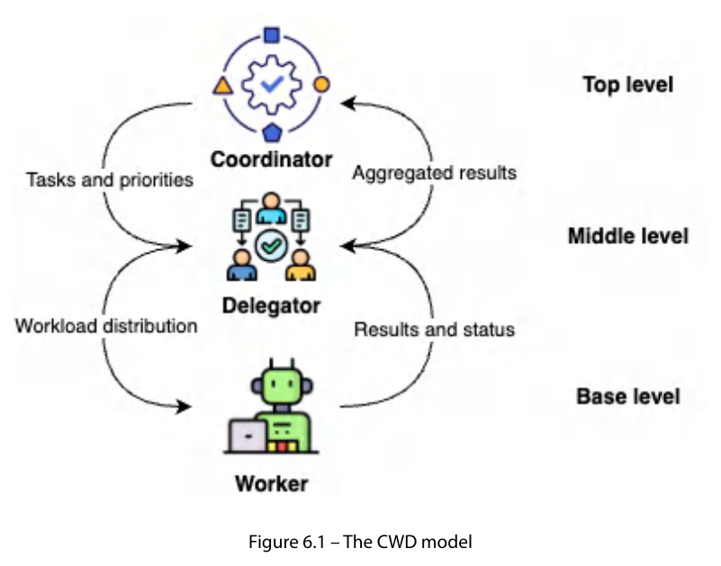
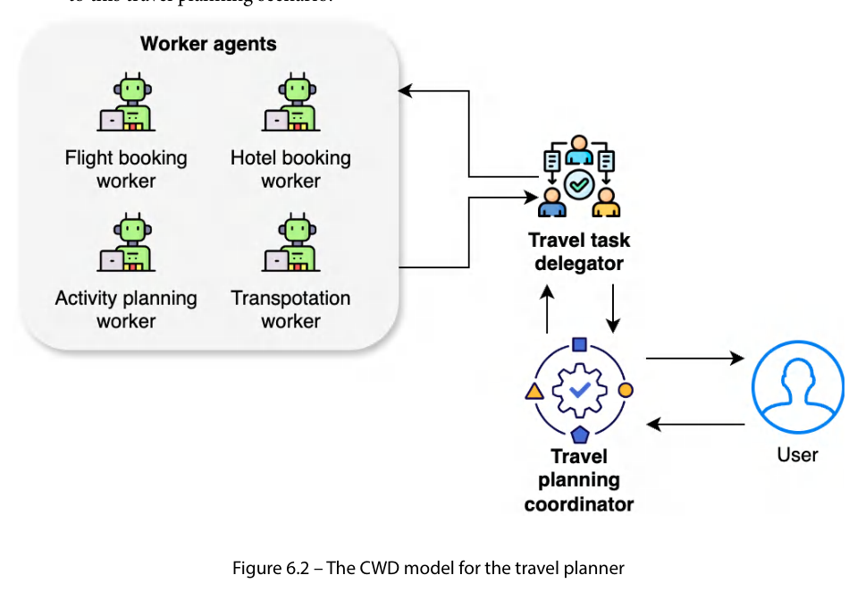
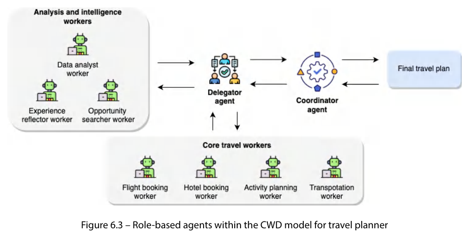

| Algorithm | Problem when used with LLM agents |
|---|---|
| A* planning | Needs a clear action-cost function and heuristic estimate of remaining cost; impossible to quantify the "distance" between conversation states or the "cost" of reaching an understanding. |
| GraphPlan | Layered action/effect graph breaks down: language isn't discrete layers with clear cause-and-effect; combinatorial explosion; mutual-exclusion between conversational actions hard to determine → intractable. |
| MCTS | Each simulation = real LLM calls (too costly); random sampling inefficient in the vast language space; game-like strength becomes weakness in open-ended language. |
FF uses heuristic search with a simplified (relaxed) planning problem to guide search.
| Advantages for LLM agents | Challenges |
|---|---|
|
• Goal-oriented approach aligns with how LLMs complete tasks • Relaxed planning gives useful approximations for complex language tasks • Heuristic guidance manages huge language search space • Flexible: works with partial state descriptions — valuable in natural language |
• Original numeric heuristics don't translate to language states • Relaxed plans risk oversimplifying rich language context • Hard to define clear delete effects (what a conversation action removes/changes) • State representation needs substantial adaptation to natural language |
class LLMFastForward:
def create_relaxed_plan(self, current_state: str, goal: str) -> list:
"""Create a simplified plan ignoring complexities"""
prompt = f"Given current state: {current_state}\nAnd goal: {goal}\n"
prompt += "Generate a simplified step-by-step plan"
return self.llm.generate_plan(prompt)
def select_next_action(self, relaxed_plan: list):
"""Choose next action based on the relaxed plan"""
return relaxed_plan[0] # simplified selection
create_relaxed_plan — takes current state & goal as text, asks the LLM for a high-level simplified plan (ignores complexities, like FF ignores delete effects).select_next_action — here simply takes the first action (relaxed_plan[0]); a real one would add selection logic.These align naturally with how language models process information and handle complex tasks; they embrace the fluid, contextual nature of language-based planning that traditional planners struggle with.
LLMs understand complex goals, generate appropriate steps, and adapt them as context changes. Unlike traditional planners needing explicit state representations, LLM planners work with natural-language descriptions of states and actions — flexible and expressive.

crew.kickoff(inputs={"request": request}). The planning task: understand client requirements, specific booking requirements, required validations; research task: flight availability, hotel options, local transportation.class TravelPlanner:
def __init__(self):
self.planner = Agent(role='Travel Planning Strategist',
goal='Create comprehensive, personalized travel plans', ...)
self.researcher = Agent(role='Travel Researcher',
goal='Find and validate travel options and opportunities', ...)
def create_travel_plan(self, request: str) -> Dict:
planning_task = Task(description=f"Analyze the following travel request ... {request}", agent=self.planner)
research_task = Task(description="Based on the initial plan, research and validate: "
"Flight availability, hotel options, and local transportation", agent=self.researcher)
crew = Crew(agents=[self.planner, self.researcher],
tasks=[planning_task, research_task], process=Process.sequential)
return crew.kickoff(inputs={"request": request})
def buy_groceries_task():
return [('go_to_store', []), ('select_items', []), ('checkout', []), ('return_home', [])]
def select_items_task():
return [('check_list', []), ('find_item', []), ('add_to_cart', [])]
buy_groceries_task is a high-level task split into four subtasks; select_items is further decomposed into three actions.

manager_llm; arbitrary plan generated by LLM; prompt engineering gives some control but is less flexible — for simpler workflows).flight_specialist = Agent(role='Flight Planning Specialist', goal='Handle all aspects of flight arrangements', backstory='Expert in airline bookings and flight logistics.')
accommodation_specialist = Agent(role='Accommodation Specialist', goal='Manage all accommodation-related planning', ...)
activity_specialist = Agent(role='Vacation Activity Specialist', goal='Manage all activity-related planning', ...)
manager_llm = ChatOpenAI(model="gpt-4o-mini")
travel_planning_task = Task(description=f"Plan a comprehensive flight itinerary: {request} ...",
expected_output="A detailed flight itinerary ...", agent=None) # manager delegates
crew = Crew(agents=[flight_specialist, accommodation_specialist, activity_specialist],
tasks=[travel_planning_task], process=Process.hierarchical, manager_llm=manager_llm)
return crew.kickoff()
Advantages of HTN: natural problem representation mirroring human thinking; better scalability (reduced search space); encodes expert knowledge in reusable task hierarchies; flexible with both abstract and primitive tasks (different levels of abstraction).
Earlier AI work treated planning algorithms and tool capabilities separately. Truly intelligent agents need them integrated: the travel planner gave a detailed but non-factual plan; to ground it in real flight/hotel/activity data, tools must be combined with planning.
travel_agent = Agent(role='Travel Planner', goal='Plan comprehensive travel itineraries',
tools=[flight_search_tool, # finding and booking flights
hotel_booking_tool, # hotel reservations
activity_planner_tool]) # local activities and attractions
The LLM agent naturally understands which tool to use per task, when to combine tools (coordinate flight & hotel dates) and how to adapt usage to requirements (budget).
| Smaller / untrained models may | Even capable models may |
|---|---|
| Fail to understand when a tool is needed Make incorrect assumptions about capabilities Use tools in wrong sequences Miss opportunities to use tools Ignore tool constraints/requirements | Struggle with complex multi-step tool combinations Be inconsistent in tool selection across similar scenarios Confuse tools with subtle functional differences Struggle with error recovery when tools fail |
Hence CrewAI, LangGraph and AutoGen work best with advanced models with strong tool reasoning, and tool-usage patterns must be tested before deployment.

Combines the structure of traditional planning with the adaptability of language models.
@tool decorator to define tools with descriptions/docs (search_flights, find_hotels, find_activities).crew.kickoff(): understands requirements from task description → identifies tools needed from role & goals → uses tools in logical sequence → processes outputs into final response.@tool("Search for available flights between cities")
def search_flights(...) -> dict:
"""Search for available flights between cities."""
agent = Agent(role='An expert travel concierge', goal='Handle all aspects of travel planning',
backstory="Expert in airline bookings, hotel bookings, and booking vacation activities.",
tools=[search_flights, find_hotels, find_activities], verbose=False)
RoundRobinGroupChat with four agents: flight planner, hotel planner, activities planner, summary agent.AssistantAgent has name, description, model client (e.g., GPT-4o-mini), tools, and system_message.TextMentionTermination — summary agent ends conversation by saying "TERMINATE". Parameters: mention_text (keyword), case_sensitive, strip_whitespace, regex_match.flight_agent = AssistantAgent(name="flight_planner", model_client=model_client,
tools=[travel_tools.search_flights],
description="A helpful assistant that can plan flights itinerary for vacation trips.",
system_message="You are a helpful assistant that can plan flight itinerary ...")
group_chat = RoundRobinGroupChat([flight_agent, hotel_agent], termination_condition=termination)
await Console(group_chat.run_stream(task="I need to plan a trip to Paris from New York for 5 days."))
@tool decorator for tools).should_continue) routing to tools or ending. Tools node always returns to agent. MemorySaver checkpoint persists state; graph compiled into a runnable.workflow = StateGraph(MessagesState)
workflow.add_node("agent", call_model)
workflow.add_node("tools", tool_node)
workflow.add_edge(START, "agent")
workflow.add_conditional_edges("agent", should_continue)
workflow.add_edge("tools", 'agent')
checkpointer = MemorySaver()
app = workflow.compile(checkpointer=checkpointer)
final_state = app.invoke({"messages": [HumanMessage(content="I need to plan a trip to Paris from New York for 5 days")]},
config={"configurable": {"thread_id": 42}})
Pros: explicit flow control (easy to visualise), built-in state management with checkpointing. Cons: needs graph-programming understanding; more initial setup than CrewAI.
| Aspect | LangGraph | CrewAI | AutoGen |
|---|---|---|---|
| State management | Explicit state management | Via agent instances and task context | Via group-chat message history |
| Tool integration | Dedicated tool node | Decorator-based definition, direct agent association | Tools associated directly with specific agents |
| Flow control | Graph-based workflow | Hierarchical task decomposition or sequential flow | Round-robin turn-taking |
A framework for building multi-agent systems emphasising collaboration, specialisation and effective task distribution/resource management. Inspired by organisational psychology and management theory — clear role delegation and hierarchy as in human organisations. Suitable where autonomous agents collaborate on goals beyond a single agent's capability.

| Role | Responsibilities |
|---|---|
| Coordinator | Manages tasks, resources and overall workflow; monitors progress, assigns tasks to appropriate agents, enables collaboration among workers; orchestrator keeping the system aligned with objectives. Prioritises workloads by dynamically allocating tasks based on urgency, resource availability and dependencies; adjusts assignments. |
| Workers | Specialised agents carrying out specific tasks/functions; diverse capabilities and expertise; when assigned by delegators they use specialised knowledge to realise task objectives → division of labour, optimum overall performance. |
| Delegators | Intermediaries between coordinators and workers; implement workload assignments by resource availability and system needs; interface for communication; dispatch & balance workload; assign right tasks to right workers at the right time. Optimise throughput, latency and resource utilisation (min delays, max tasks per unit time, prevent bottlenecks). |

| Agent | Duties |
|---|---|
| Coordinator — travel planning coordinator | Manage overall travel-planning process from user request; monitor progress & collaboration; assign tasks/coordinate workflow per customer requirements. |
| Workers | Flight booking (search/book by dates, destinations, preferences); Hotel booking (location, amenities, preferences); Activity planning (tours/experiences tailored to interests); Transportation (rental cars, airport transfers, local transport). |
| Delegator — travel task delegator | Interface between coordinator and workers; receives tasks; assesses capabilities & availability; assigns by expertise and workload; balances workload. |
Benefits: complex tasks broken down, clear communication and responsibility, multiple requests handled simultaneously with quality. (Full code in Chapter_06.ipynb using CrewAI and AutoGen.)
In CrewAI each agent is initialised with role, goal and backstory.
coordinator = Agent(role="Strategic Planning Manager",
backstory="A veteran project manager who has successfully led diverse teams in Silicon Valley startups, "
"known for balancing innovation with practical execution. Expertise in bridging communication "
"gaps between technical and non-technical teams while maintaining focus on key deliverables.",
verbose=True)
| Role | CWD mapping | Travel-agent duties |
|---|---|---|
| Manager | = Coordinator | Monitor planning progress; allocate resources (compute, external API access); ensure time constraints are met. |
| Analyst | Worker | Analyse customer preferences & trends; recommend destinations/activities; find cost savings & optimal routes; summarise outcomes. |
| Reflector | Worker | Observe performance; analyse feedback & satisfaction; identify bottlenecks/inefficiencies; propose improvements to algorithms/workflows. |
| Searcher | Worker | Explore the problem space; discover new destinations/activities; explore alternative transport/routes; share trends & regulations (innovation). |
| Task Interpreter | = Delegator | Map high-level tasks into concrete actions; break request into subtasks; translate preferences into tasks; ensure tasks are clear/unambiguous. |
Background research: Kazík (2010) studied role-based approaches in multi-agent systems — roles are abstract representations of stereotypical behaviour providing interfaces through which agents get knowledge of/affect their environment. Principles carried to LLM agents: separation of interaction logic from inner algorithmic logic, dynamic role assignment, modular system organisation → modular, reusable designs.

| Aspect | Description & travel example |
|---|---|
| Communication | Well-defined protocols (message formats and interaction patterns), e.g., standardised FIPA Agent Communication Language (ACL) — message states content (requested travel dates), sender (hotel booking worker), recipient (flight booking worker). |
| Coordination mechanism | Coordinators align worker activities with objectives; control dependencies; ensure timeframes: task prioritisation, resource allocation, progress monitoring. E.g., if the customer prioritises accommodation, coordinator instructs delegator to give the hotel worker higher priority; reallocates resources as needed. |
| Negotiation & conflict resolution | When goals/actions conflict, use negotiation strategies — compromise or mediation by predefined criteria/coordinator. E.g., activity worker schedules a full-day tour but transportation worker books a rental car for the whole day: delegator mediates (reschedule tour/modify car); if unresolved, coordinator decides using predefined criteria or customer preference. |
| Knowledge sharing | Agents share insights for continuous learning/adaptation. E.g., data analyst spots a rising eco-friendly travel trend → shares with activity & transportation workers; searcher finds a new eco-resort → shares with hotel & activity workers. |
The role-based approach sets clear boundaries for communication channels and responsibilities; protocols for communication, coordination and knowledge sharing harness collective intelligence.